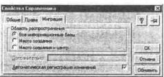
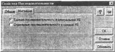
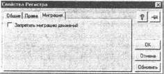

Для организаций с небольшим количеством однотипных периферийных информационных баз наиболее простым, очевидно, будет являться режим полной миграции, при котором данные всех информационных баз полностью синхронизируются. В более сложных случаях может потребоваться настройка свойств миграции отдельных элементов метаданных конфигурации.
Свойства миграции могут быть настроены для следующих объектов метаданных:
Сама конфигурация в целом не является объектом настройки и всегда имеет режим полной миграции, т.е. синхронизируется всеми ИБ системы.
Для настройки свойств миграции конкретного объекта метаданных нужно в окне «Конфигурация - Метаданные» выбрать объект метаданных и, вызвав палитру свойств, перейти к закладке «Миграция».
Область распространения. Группа переключателей «Область распространения» устанавливает режим миграции «ведущих» объектов, принадлежащих к данному объекту метаданных.
Режим «Все информационные базы» определяет полную миграцию, т.е. содержимое элемента будет синхронизироваться всеми ИБ системы.
Режим «Место создания»: объекты не мигрируют никуда; состав данных, принадлежащих к данному объекту метаданных, является строго индивидуальным для каждой ИБ системы и никак не синхронизируется.
Режим «Место создания и центр» устанавливает поведение системы, при котором вновь созданный на периферийной ИБ объект мигрирует на центральную ИБ и остается доступным только по месту создания и в центре (этот список можно расширить, см. описание поля ввода «Дополнительно»).
Дополнительно. Если установлен режим «Место создания и центр», в этом поле можно через запятую ввести коды дополнительных ИБ, расширив, таким образом, область распространения объектов данного типа. Все, что сказано в предыдущем абзаце для центральной ИБ, становится верным и для периферийных, включенных в этот список. опускается использование символов-заменителей: например, «W*» означает все периферийные ИБ, чей код начинается с символа «W».
Автоматическая регистрация изменений. Этот признак определяет режим, при котором система автоматически фиксирует все изменения объектов, чтобы выполнить затем перенос измененных данных в другие информационные базы. В большинстве случаев данный признак устанавливается. Отключение режима автоматической регистрации изменений производится в специальных случаях, когда объекты данного вида (в рассматриваемом примере - элементы справочника) не должны при изменениях автоматически переноситься в другие информационные базы. В этом случае регистрация изменений будет производиться только при определенных обстоятельствах, регулируемых средствами встроенного языка в конфигурации.
Заметим, что при включенном режиме автоматической регистрации средства встроенного языка позволяют, наоборот, отключить в определенных случаях регистрацию изменений. Управление регистрацией изменений из встроенного языка будет рассмотрено ниже.
Для документов миграция объектов настраивается аналогично рассмотренной настройке параметров миграции справочников.
Для констант разрешены только режимы «Все информационные базы» и «Место создания». Выбор режима миграции «Место создания и центра- запрещен как не имеющий смысла: в этом случае изменения константы мигрировали бы только в центр (или вообще никуда не мигрировали, если изменения произошли на центральной ИБ) и не оказывали бы влияния на содержимое соответствующей константы всех прочих периферийных ИБ. Если для элементов метаданных типа «Справочник» или «Документ», которым может соответствовать множество элементов данных (элементов справочника, документов) потребность в таком режиме миграции может возникнуть, то для константы, которой соответствует единичный элемент данных, очевидно, такой режим не нужен. Режим автоматической регистрации изменений для констант не может быть отключен.
Для планов счетов свойства миграции настраиваются аналогично документам и справочникам. Заметим, что настройка миграции выполняется для плана счетов в целом, а не для каждого счета в отдельности. Важной особенностью миграции бухгалтерских счетов является то, что счета, введенные непосредственно в метаданных, распространяются вместе с конфигурацией на все периферийные ИБ вне зависимости от настроек миграции плана счетов. Режим автоматической регистрации изменений для планов счетов не может быть отключен.
Для типовых операций свойства миграции настраиваются аналогично документам и справочникам. Так как типовые операции не имеют видов (то есть, фактически, для них не определено объектов метаданных), настройка миграции выполняется для всех типовых операций в целом. Режим автоматической регистрации изменений для типовых операций не может быть отключен.
Для списка корректных проводок, как и для констант, разрешены только режимы «Все информационные базы» и «Место создания», то есть, он может распространяться либо во всей распределенной информационной базе, либо вестись на каждой ИБ самостоятельно. При этом настройка миграции выполняется для списка корректных проводок в целом и сам список рассматривается системой как единый объект: при любых изменениях в списке корректных проводок обновляется весь список. Режим автоматической регистрации изменений для корректных проводок не может быть отключен.
Для календарей, как для констант и списка корректных проводок, допустимыми являются только два режима: «Все информационные базы» и «Место создания». То есть, каждый из календарей может распространяться либо во всей распределенной информационной базе, либо вестись на каждой ИБ самостоятельно.
Для последовательностей документов закладка «Миграция» имеет специальный вид.
Так как последовательности документов не являются собственно объектами данных, то для них настраивается не область распространения, а способ функционирования в распределенной информационной базе.
Последовательность документов предназначена для логического контроля проведения определенных документов в строгом хронологическом порядке. С точки зрения распределенной информационной базы, имеют смысл два принципиальных способа функционирования механизма последовательностей документов:
• единая последовательность в центральной ИБ;
• отдельные последовательности в каждой ИБ.
Первый вариант предполагает, что порядок проведения документов критичен только в центральной информационной базе, так как туда переносятся все документы с периферийных ИБ и они должны быть перепроведены в общей хронологической последовательности. При этом последовательность проведения документов на периферийных И Б не контролируется.
Второй вариант предполагает контроль порядка проведения на каждой информационной базе независимо. В этом случае документы, созданные в других информационных базах, не учитываются в этой последовательности в данной информационной базе.
Выбор варианта зависит от назначения последовательности документов. Например, если последовательность используется для контроля списания товаров по методу LIFO или FIFO, то выбор варианта определяется тем, соответствуют ли информационные базы отдельным юридическим лицам, или нет. Если каждая информационная база является отдельным юридическим лицом, имеет смысл использовать второй вариант, так как списание должно выполняться, исходя из данных именно этой информационной базы. Если, например, информационные базы являются отдельными складами, и вся система является одним юридическим лицом, то имеет смысл использовать первый вариант. Очевидно, что в этом случае списание себестоимости должно производиться в центральной ИБ на основании данных всех информационных баз.
Для регистров оперативного учета закладка имеет специальный вид.
Для регистров настройка миграции заключается в возможности полного отключения миграции движений. Для этого следует установить флажок «Запретить миграцию движений». Отключение миграции для регистров используется в специальных случаях, когда движения регистров имеют смысл только в тех информационных базах, в которых они записывались при проведении документов.
Например, миграция движений может быть отключена для регистра, отвечающего за списание себестоимости товаров в центральной информационной базе. Обычно в этом случае в модуле документа предусматривается алгоритм, который не создает движений по этому регистру в периферийных И Б. Отключение миграции регистра позволяет при переносе изменений в периферийную И Б из центральной не переносить движения по этому регистру.
Заметим, что при загрузке измененного документа существующие движения по регистру удаляются независимо от настройки миграции. То есть документ не может остаться с движениями, созданными до загрузки его изменений. В описанном примере после загрузки изменений в центральной ИБ из периферийных ИБ созданные при проведении в центральной ИБ движения регистра будут очищены. Для восстановления движений по тем документам, по которым загружались изменения, необходимо будет их снова провести.
Для операции бухгалтерского учета закладка «Миграция» имеет вид, аналогичный настройке миграции регистров.
Для операции настройка заключается в возможности полного отключения миграции. Для этого следует установить флажок «Запретить миграцию операций». Отключение миграции для операции используется в специальных случаях, когда данные бухгалтерского учета имеют смысл только в тех информационных базах, в которых он ведется. Например, периферийные информационные базы обеспечивают ведение складского учета с использованием возможностей компоненты «Оперативный учет», а в центральной ИБ документы, созданные в периферийных ИБ, записывают при проведении бухгалтерские операции. Отключение миграции операций позволяет не переносить записанные данные бухгалтерского учета в периферийную ИБ.
Заметим, что при загрузке измененного документа существующая операция удаляется, независимо от настройки миграции, то есть документ не может остаться с операцией, созданной до загрузки его изменений. В описанном примере после загрузки изменений в центральной ИБ из периферийных ИБ созданные при проведении в центральной И Б операции будут очищены. Для восстановления операций по тем документам, по которым загружались изменения, необходимо будет их снова провести.
Признак «Запретить миграцию операций» не может быть установлен, если в конфигурации существуют документы, для которых определена миграция и включен признак «Создавать операцию - Всегда».
Процесс настройки свойств миграции требует глубокого понимания как принципов работы компоненты управления данными в распределенной ИБ и системы «1С:Предприятие» в целом, так и особенностей функционирования конкретной конфигурации. Для иллюстрации сказанного приведем два примера.
Документ имеет реквизит типа «Справочник», область миграции которого более ограничена, чем у самого документа. В таком случае, конкретный документ, переданный в другую ИБ, не синхронизирующую состояние справочника, в поле этого реквизита будет иметь пустую ссылку.
В расчете ресурсов регистра принимают участие несколько типов документов, имеющих различные свойства миграции (или свойства неполной миграции). В результате состояние регистров будет отличаться на разных И Б распределенной информационной базы.
Результаты такого «некорректного» использования средств управления миграцией данных могут быть различны и зависят от конкретной конфигурации. Вы можете пойти на это вполне осознанно и исключить «аварийные» ситуации за счет настройки пользовательских интерфейсов, прав, средств встроенного языка. Более подробно это рассмотрено в разделе «Методы исключения коллизий».